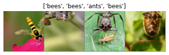
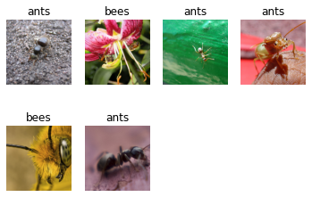
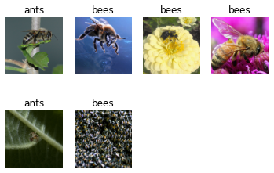

轉移學習：自訂的輸入層及辨識層#
修改自『TRANSFER LEARNING FOR COMPUTER VISION TUTORIAL』#
載入套件#
import torch
import torch.nn as nn
import torch.optim as optim
from torch.optim import lr_scheduler
import numpy as np
import torchvision
from torchvision import datasets, models, transforms
import matplotlib.pyplot as plt
import time
import os
import copy
載入資料#
# 訓練資料進行資料增補，驗證資料不需要
data_transforms = {
'train': transforms.Compose([
transforms.RandomResizedCrop(224), # 資料增補
transforms.RandomHorizontalFlip(),
transforms.ToTensor(),
transforms.Normalize([0.485, 0.456, 0.406], [0.229, 0.224, 0.225])
]),
'val': transforms.Compose([
transforms.Resize(256),
transforms.CenterCrop(224),
transforms.ToTensor(),
transforms.Normalize([0.485, 0.456, 0.406], [0.229, 0.224, 0.225])
]),
}
# 使用 ImageFolder 可方便轉換為 dataset
data_dir = './hymenoptera_data'
image_datasets = {x: datasets.ImageFolder(os.path.join(data_dir, x),
data_transforms[x])
for x in ['train', 'val']}
dataloaders = {x: torch.utils.data.DataLoader(image_datasets[x], batch_size=4,
shuffle=True, num_workers=4)
for x in ['train', 'val']}
# 取得資料筆數
dataset_sizes = {x: len(image_datasets[x]) for x in ['train', 'val']}
# 取得類別
class_names = image_datasets['train'].classes
dataset_sizes
{'train': 244, 'val': 153}
檢查 GPU#
device = torch.device("cuda:0" if torch.cuda.is_available() else "cpu")
"cuda" if torch.cuda.is_available() else "cpu"
'cuda'
顯示資料增補的圖像#
def imshow(inp, title=None):
inp = inp.numpy().transpose((1, 2, 0))
mean = np.array([0.485, 0.456, 0.406])
std = np.array([0.229, 0.224, 0.225])
inp = std * inp + mean
inp = np.clip(inp, 0, 1)
plt.axis('off')
plt.imshow(inp)
if title is not None:
plt.title(title)
plt.pause(0.001) # pause a bit so that plots are updated
# 取得一批資料
inputs, classes = next(iter(dataloaders['train']))
# 顯示一批資料
out = torchvision.utils.make_grid(inputs)
imshow(out, title=[class_names[x] for x in classes])

定義模型訓練函數#
# 同時含訓練/評估
def train_model(model, criterion, optimizer, scheduler, num_epochs=25):
since = time.time()
best_model_wts = copy.deepcopy(model.state_dict())
best_acc = 0.0
for epoch in range(num_epochs):
print('Epoch {}/{}'.format(epoch, num_epochs - 1))
print('-' * 10)
# Each epoch has a training and validation phase
for phase in ['train', 'val']:
if phase == 'train':
model.train() # Set model to training mode
else:
model.eval() # Set model to evaluate mode
running_loss = 0.0
running_corrects = 0
# 逐批訓練或驗證
for inputs, labels in dataloaders[phase]:
inputs = inputs.to(device)
labels = labels.to(device)
# zero the parameter gradients
optimizer.zero_grad()
# 訓練時需要梯度下降
with torch.set_grad_enabled(phase == 'train'):
outputs = model(inputs)
_, preds = torch.max(outputs, 1)
loss = criterion(outputs, labels)
# 訓練時需要 backward + optimize
if phase == 'train':
loss.backward()
optimizer.step()
# 統計損失
running_loss += loss.item() * inputs.size(0)
running_corrects += torch.sum(preds == labels.data)
if phase == 'train':
scheduler.step()
epoch_loss = running_loss / dataset_sizes[phase]
epoch_acc = running_corrects.double() / dataset_sizes[phase]
print('{} Loss: {:.4f} Acc: {:.4f}'.format(
phase, epoch_loss, epoch_acc))
# 如果是評估階段，且準確率創新高即存入 best_model_wts
if phase == 'val' and epoch_acc > best_acc:
best_acc = epoch_acc
best_model_wts = copy.deepcopy(model.state_dict())
print()
time_elapsed = time.time() - since
print('Training complete in {(time_elapsed // 60):.0f}m {(time_elapsed % 60):.0f}s')
print(f'Best val Acc: {best_acc:4f}')
# 載入最佳模型
model.load_state_dict(best_model_wts)
return model
定義顯示預測結果的函數#
def imshow2(inp, title=None):
inp = inp.numpy().transpose((1, 2, 0))
mean = np.array([0.485, 0.456, 0.406])
std = np.array([0.229, 0.224, 0.225])
inp = std * inp + mean
inp = np.clip(inp, 0, 1)
plt.imshow(inp)
def visualize_model(model, num_images=6):
was_training = model.training
model.eval()
images_so_far = 0
fig = plt.figure()
with torch.no_grad():
for i, (inputs, labels) in enumerate(dataloaders['val']):
inputs = inputs.to(device)
labels = labels.to(device)
outputs = model(inputs)
_, preds = torch.max(outputs, 1)
for j in range(inputs.size()[0]):
images_so_far += 1
plt.subplot(num_images//4+1, 4, images_so_far)
plt.axis('off')
plt.title(class_names[preds[j]])
imshow2(inputs.cpu().data[j])
if images_so_far == num_images:
model.train(mode=was_training)
return
model.train(mode=was_training)
plt.tight_layout()
plt.show()
自訂辨識層#
model_ft = models.resnet18(pretrained=True)
num_ftrs = model_ft.fc.in_features
# 改為自訂辨識層
model_ft.fc = nn.Linear(num_ftrs, 2)
model_ft = model_ft.to(device)
# 定義損失函數
criterion = nn.CrossEntropyLoss()
# 定義優化器
optimizer_ft = optim.SGD(model_ft.parameters(), lr=0.001, momentum=0.9)
# 每7個執行週期，學習率降 0.1
exp_lr_scheduler = lr_scheduler.StepLR(optimizer_ft, step_size=7, gamma=0.1)
model_ft.modules
<bound method Module.modules of ResNet(
(conv1): Conv2d(3, 64, kernel_size=(7, 7), stride=(2, 2), padding=(3, 3), bias=False)
(bn1): BatchNorm2d(64, eps=1e-05, momentum=0.1, affine=True, track_running_stats=True)
(relu): ReLU(inplace=True)
(maxpool): MaxPool2d(kernel_size=3, stride=2, padding=1, dilation=1, ceil_mode=False)
(layer1): Sequential(
(0): BasicBlock(
(conv1): Conv2d(64, 64, kernel_size=(3, 3), stride=(1, 1), padding=(1, 1), bias=False)
(bn1): BatchNorm2d(64, eps=1e-05, momentum=0.1, affine=True, track_running_stats=True)
(relu): ReLU(inplace=True)
(conv2): Conv2d(64, 64, kernel_size=(3, 3), stride=(1, 1), padding=(1, 1), bias=False)
(bn2): BatchNorm2d(64, eps=1e-05, momentum=0.1, affine=True, track_running_stats=True)
)
(1): BasicBlock(
(conv1): Conv2d(64, 64, kernel_size=(3, 3), stride=(1, 1), padding=(1, 1), bias=False)
(bn1): BatchNorm2d(64, eps=1e-05, momentum=0.1, affine=True, track_running_stats=True)
(relu): ReLU(inplace=True)
(conv2): Conv2d(64, 64, kernel_size=(3, 3), stride=(1, 1), padding=(1, 1), bias=False)
(bn2): BatchNorm2d(64, eps=1e-05, momentum=0.1, affine=True, track_running_stats=True)
)
)
(layer2): Sequential(
(0): BasicBlock(
(conv1): Conv2d(64, 128, kernel_size=(3, 3), stride=(2, 2), padding=(1, 1), bias=False)
(bn1): BatchNorm2d(128, eps=1e-05, momentum=0.1, affine=True, track_running_stats=True)
(relu): ReLU(inplace=True)
(conv2): Conv2d(128, 128, kernel_size=(3, 3), stride=(1, 1), padding=(1, 1), bias=False)
(bn2): BatchNorm2d(128, eps=1e-05, momentum=0.1, affine=True, track_running_stats=True)
(downsample): Sequential(
(0): Conv2d(64, 128, kernel_size=(1, 1), stride=(2, 2), bias=False)
(1): BatchNorm2d(128, eps=1e-05, momentum=0.1, affine=True, track_running_stats=True)
)
)
(1): BasicBlock(
(conv1): Conv2d(128, 128, kernel_size=(3, 3), stride=(1, 1), padding=(1, 1), bias=False)
(bn1): BatchNorm2d(128, eps=1e-05, momentum=0.1, affine=True, track_running_stats=True)
(relu): ReLU(inplace=True)
(conv2): Conv2d(128, 128, kernel_size=(3, 3), stride=(1, 1), padding=(1, 1), bias=False)
(bn2): BatchNorm2d(128, eps=1e-05, momentum=0.1, affine=True, track_running_stats=True)
)
)
(layer3): Sequential(
(0): BasicBlock(
(conv1): Conv2d(128, 256, kernel_size=(3, 3), stride=(2, 2), padding=(1, 1), bias=False)
(bn1): BatchNorm2d(256, eps=1e-05, momentum=0.1, affine=True, track_running_stats=True)
(relu): ReLU(inplace=True)
(conv2): Conv2d(256, 256, kernel_size=(3, 3), stride=(1, 1), padding=(1, 1), bias=False)
(bn2): BatchNorm2d(256, eps=1e-05, momentum=0.1, affine=True, track_running_stats=True)
(downsample): Sequential(
(0): Conv2d(128, 256, kernel_size=(1, 1), stride=(2, 2), bias=False)
(1): BatchNorm2d(256, eps=1e-05, momentum=0.1, affine=True, track_running_stats=True)
)
)
(1): BasicBlock(
(conv1): Conv2d(256, 256, kernel_size=(3, 3), stride=(1, 1), padding=(1, 1), bias=False)
(bn1): BatchNorm2d(256, eps=1e-05, momentum=0.1, affine=True, track_running_stats=True)
(relu): ReLU(inplace=True)
(conv2): Conv2d(256, 256, kernel_size=(3, 3), stride=(1, 1), padding=(1, 1), bias=False)
(bn2): BatchNorm2d(256, eps=1e-05, momentum=0.1, affine=True, track_running_stats=True)
)
)
(layer4): Sequential(
(0): BasicBlock(
(conv1): Conv2d(256, 512, kernel_size=(3, 3), stride=(2, 2), padding=(1, 1), bias=False)
(bn1): BatchNorm2d(512, eps=1e-05, momentum=0.1, affine=True, track_running_stats=True)
(relu): ReLU(inplace=True)
(conv2): Conv2d(512, 512, kernel_size=(3, 3), stride=(1, 1), padding=(1, 1), bias=False)
(bn2): BatchNorm2d(512, eps=1e-05, momentum=0.1, affine=True, track_running_stats=True)
(downsample): Sequential(
(0): Conv2d(256, 512, kernel_size=(1, 1), stride=(2, 2), bias=False)
(1): BatchNorm2d(512, eps=1e-05, momentum=0.1, affine=True, track_running_stats=True)
)
)
(1): BasicBlock(
(conv1): Conv2d(512, 512, kernel_size=(3, 3), stride=(1, 1), padding=(1, 1), bias=False)
(bn1): BatchNorm2d(512, eps=1e-05, momentum=0.1, affine=True, track_running_stats=True)
(relu): ReLU(inplace=True)
(conv2): Conv2d(512, 512, kernel_size=(3, 3), stride=(1, 1), padding=(1, 1), bias=False)
(bn2): BatchNorm2d(512, eps=1e-05, momentum=0.1, affine=True, track_running_stats=True)
)
)
(avgpool): AdaptiveAvgPool2d(output_size=(1, 1))
(fc): Linear(in_features=512, out_features=2, bias=True)
)>
訓練：CPU訓練時間約需15~20分鐘#
model_ft = train_model(model_ft, criterion, optimizer_ft, exp_lr_scheduler,
num_epochs=25)
Epoch 0/24
----------
train Loss: 0.5432 Acc: 0.7254
val Loss: 0.2116 Acc: 0.9150
Epoch 1/24
----------
train Loss: 0.4411 Acc: 0.7951
val Loss: 0.5264 Acc: 0.8039
Epoch 2/24
----------
train Loss: 0.7304 Acc: 0.7869
val Loss: 0.2224 Acc: 0.9085
Epoch 3/24
----------
train Loss: 0.4189 Acc: 0.8525
val Loss: 0.3782 Acc: 0.8693
Epoch 4/24
----------
train Loss: 0.4815 Acc: 0.7951
val Loss: 0.2012 Acc: 0.9020
Epoch 5/24
----------
train Loss: 0.4423 Acc: 0.8074
val Loss: 0.4074 Acc: 0.8889
Epoch 6/24
----------
train Loss: 0.4577 Acc: 0.8361
val Loss: 0.3444 Acc: 0.8824
Epoch 7/24
----------
train Loss: 0.4492 Acc: 0.8402
val Loss: 0.2659 Acc: 0.9020
Epoch 8/24
----------
train Loss: 0.3427 Acc: 0.8730
val Loss: 0.2327 Acc: 0.9085
Epoch 9/24
----------
train Loss: 0.3895 Acc: 0.8320
val Loss: 0.2695 Acc: 0.9085
Epoch 10/24
----------
train Loss: 0.3197 Acc: 0.8566
val Loss: 0.2178 Acc: 0.9150
Epoch 11/24
----------
train Loss: 0.3396 Acc: 0.8770
val Loss: 0.2204 Acc: 0.9150
Epoch 12/24
----------
train Loss: 0.2825 Acc: 0.8811
val Loss: 0.2022 Acc: 0.9346
Epoch 13/24
----------
train Loss: 0.1848 Acc: 0.9139
val Loss: 0.1908 Acc: 0.9281
Epoch 14/24
----------
train Loss: 0.2911 Acc: 0.8770
val Loss: 0.2168 Acc: 0.9216
Epoch 15/24
----------
train Loss: 0.1873 Acc: 0.9262
val Loss: 0.2153 Acc: 0.9085
Epoch 16/24
----------
train Loss: 0.2950 Acc: 0.8566
val Loss: 0.2033 Acc: 0.9150
Epoch 17/24
----------
train Loss: 0.2070 Acc: 0.9139
val Loss: 0.1865 Acc: 0.9216
Epoch 18/24
----------
train Loss: 0.2565 Acc: 0.8934
val Loss: 0.2082 Acc: 0.9150
Epoch 19/24
----------
train Loss: 0.2969 Acc: 0.8934
val Loss: 0.1876 Acc: 0.9281
Epoch 20/24
----------
train Loss: 0.2808 Acc: 0.8934
val Loss: 0.2072 Acc: 0.9216
Epoch 21/24
----------
train Loss: 0.3028 Acc: 0.8607
val Loss: 0.1917 Acc: 0.9150
Epoch 22/24
----------
train Loss: 0.3294 Acc: 0.8443
val Loss: 0.1986 Acc: 0.9216
Epoch 23/24
----------
train Loss: 0.2108 Acc: 0.9098
val Loss: 0.1976 Acc: 0.9216
Epoch 24/24
----------
train Loss: 0.2564 Acc: 0.8852
val Loss: 0.2136 Acc: 0.9085
Training complete in 3m 60s
Best val Acc: 0.934641
顯示預測結果#
visualize_model(model_ft)

設定預先訓練的模型不用重新訓練，CPU訓練時間可以減半#
model_conv = torchvision.models.resnet18(pretrained=True)
for param in model_conv.parameters():
# 不用重新訓練
param.requires_grad = False
# Parameters of newly constructed modules have requires_grad=True by default
num_ftrs = model_conv.fc.in_features
model_conv.fc = nn.Linear(num_ftrs, 2)
model_conv = model_conv.to(device)
# 定義損失函數
criterion = nn.CrossEntropyLoss()
# 定義優化器
optimizer_conv = optim.SGD(model_conv.parameters(), lr=0.001, momentum=0.9)
# 每7個執行週期，學習率降 0.1
exp_lr_scheduler = lr_scheduler.StepLR(optimizer_conv, step_size=7, gamma=0.1)
model_conv = train_model(model_conv, criterion, optimizer_conv,
exp_lr_scheduler, num_epochs=25)
Epoch 0/24
----------
train Loss: 0.6654 Acc: 0.6475
val Loss: 0.2450 Acc: 0.9150
Epoch 1/24
----------
train Loss: 0.4087 Acc: 0.7951
val Loss: 0.4121 Acc: 0.7974
Epoch 2/24
----------
train Loss: 0.4980 Acc: 0.7418
val Loss: 0.4285 Acc: 0.8301
Epoch 3/24
----------
train Loss: 0.5866 Acc: 0.7623
val Loss: 0.2402 Acc: 0.9281
Epoch 4/24
----------
train Loss: 0.3932 Acc: 0.8566
val Loss: 0.4330 Acc: 0.8301
Epoch 5/24
----------
train Loss: 0.3748 Acc: 0.8443
val Loss: 0.3219 Acc: 0.8824
Epoch 6/24
----------
train Loss: 0.4919 Acc: 0.7910
val Loss: 0.1925 Acc: 0.9477
Epoch 7/24
----------
train Loss: 0.3145 Acc: 0.8566
val Loss: 0.2025 Acc: 0.9542
Epoch 8/24
----------
train Loss: 0.3978 Acc: 0.8320
val Loss: 0.2267 Acc: 0.9281
Epoch 9/24
----------
train Loss: 0.3721 Acc: 0.8484
val Loss: 0.2167 Acc: 0.9281
Epoch 10/24
----------
train Loss: 0.2989 Acc: 0.8689
val Loss: 0.1879 Acc: 0.9542
Epoch 11/24
----------
train Loss: 0.3771 Acc: 0.8525
val Loss: 0.2259 Acc: 0.9281
Epoch 12/24
----------
train Loss: 0.3567 Acc: 0.8566
val Loss: 0.1991 Acc: 0.9346
Epoch 13/24
----------
train Loss: 0.3395 Acc: 0.8484
val Loss: 0.2066 Acc: 0.9281
Epoch 14/24
----------
train Loss: 0.2813 Acc: 0.8607
val Loss: 0.2067 Acc: 0.9281
Epoch 15/24
----------
train Loss: 0.3208 Acc: 0.8402
val Loss: 0.1892 Acc: 0.9477
Epoch 16/24
----------
train Loss: 0.3670 Acc: 0.8525
val Loss: 0.1955 Acc: 0.9346
Epoch 17/24
----------
train Loss: 0.3963 Acc: 0.8361
val Loss: 0.1906 Acc: 0.9281
Epoch 18/24
----------
train Loss: 0.3618 Acc: 0.8279
val Loss: 0.1921 Acc: 0.9477
Epoch 19/24
----------
train Loss: 0.3504 Acc: 0.8197
val Loss: 0.2030 Acc: 0.9150
Epoch 20/24
----------
train Loss: 0.3245 Acc: 0.8607
val Loss: 0.1975 Acc: 0.9412
Epoch 21/24
----------
train Loss: 0.3701 Acc: 0.8156
val Loss: 0.1865 Acc: 0.9412
Epoch 22/24
----------
train Loss: 0.3176 Acc: 0.8484
val Loss: 0.1913 Acc: 0.9412
Epoch 23/24
----------
train Loss: 0.3699 Acc: 0.8402
val Loss: 0.2042 Acc: 0.9346
Epoch 24/24
----------
train Loss: 0.3572 Acc: 0.8443
val Loss: 0.1908 Acc: 0.9477
Training complete in 3m 8s
Best val Acc: 0.954248
visualize_model(model_conv)

Further Learning#
If you would like to learn more about the applications of transfer learning,
checkout our Quantized Transfer Learning for Computer Vision Tutorial <https://pytorch.org/tutorials/intermediate/quantized_transfer_learning_tutorial.html>_.